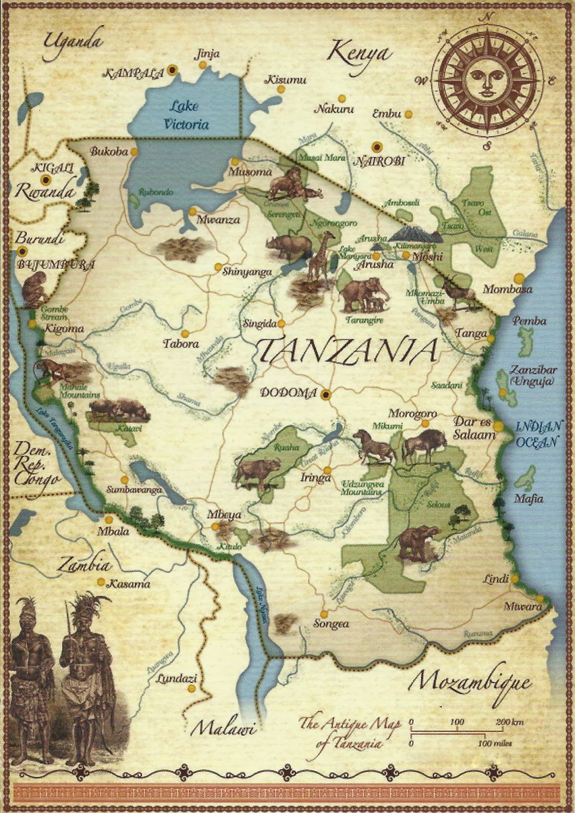

DESLIZA PARA MÁS INFORMACIÓN
Nuestra familia y amigos
Del norte y del sur
10 Septiembre 2022
Un Sábado especial
Hace ya más de seis años y medio que nuestros caminos se cruzaron, una noche de verano en Portugal. El siguiente país en el que nos vimos, y que decidimos llamar “casa” durante seis años, fue Reino Unido. Ahora España va a ser el país que nos vea casarnos y empezar un nuevo capítulo juntos. Y aunque no sabemos si la vida nos traerá nuevos países, “casa” siempre será donde estemos juntos.
Dicen que nadie podría inventarse una ciudad como Sevilla, que tiene un color especial, que hay que sentirla, que emociona. Con descripciones así, no podíamos no elegirla como escenario de un día tan especial, y así presentársela a quien aún no la conozca o dar una excusa para volver a quienes ya se enamoraron de ella.
Aún así, no nos podemos engañar, le falta tener la bahía más bonita del mundo. Pero es que esa está en Santander.
Para quienes venís de más lejos, el aeropuerto de Sevilla tiene vuelos directos con Santander, Bilbao, Vitoria, La Coruña, Madrid, Valencia, Barcelona, Londres y Milán. El aeropuerto se encuentra a 15 minutos del centro de Sevilla en taxi y a 35-40 minutos en autobús de la estación de Plaza de Armas (línea EA, cada 15 minutos).
Buscar vueloPara quienes podáis apostar por el transporte más sostenible, la estación sevillana de Santa Justa está conectada por tren con Madrid (estación Puerta de Atocha) y con Zaragoza (estación Delicias). Desde Santa Justa, dependiendo de la ubicación de vuestro alojamiento, podréis caminar, coger un autobús o un taxi.
Buscar trenPara quienes os gusta conducir y disponéis de tiempo, Sevilla es el final (o el inicio) de la Ruta de la Plata. Esta puede ser una magnífica oportunidad de marcaros un roadtrip por España. Os dejamos enlace a Google Maps para que podáis planificar vuestro itinerario y estimar la duración de vuestro viaje, paradas, etc.
Ruta en CocheFamiliia e Invitados de fuera de Sevilla
20:30 a 21:00
Familia e Invitados de fuera de Sevilla
Dress: Casual
21:00 a 22:45PM
Todos los invitados
Dress: Casual
22:45 en adelante
Se encuentra ubicado en XX, a X minutos andando del lugar de la preboda del viernes y a X minutos andado del punto de recogida de los autobuses para la boda el sábado.
Se encuentra ubicado en XX, a X minutos andando del lugar de la preboda del viernes y a X minutos andado del punto de recogida de los autobuses para la boda el sábado.
Nos acompañas? Para confirmar tu asistencia a la boda, comunicar alergias, intolerancias o transmitirnos cualquier detalle que debamos saber, haz click en el botón 'RSVP'.
Tanto si decidís venir a Sevilla solo para el fin de semana de la boda como si queréis aprovechar para cogeros unos días de vacaciones, aquí os dejamos algunas sugerencias.
Después de unos meses muy ajetreados con mudanza de país, cambio de trabajo y preparativos de boda, nos merecemos un buen descanso. Por eso, después de celebrar todos juntos la boda, nos iremos de Luna de Miel, ¡os aseguramos que no podemos más con las ganas de viajar! El destino elegido es Tanzania, con una mezcla de safari y playa, y la cantidad de animales que conozcamos va a depender de vosotros. Si queréis tener un detalle con nosotros, este irá destinado a nuestro viaje de novios, y nos permitirá ampliar la luna de miel para visitar diferentes parques naturales y playas.
En este mapa podéis ver qué lugares nos gustaría visitar, ¡y podréis comprobar si entre todos llegamos al objetivo!
En Sevilla, a principios de septiembre, el tiempo es seco. La temperatura máxima está en torno a los 30 grados, y las mínimas alrededor de 20 grados. Recordad que la boda es de tarde, y se prolongará…
Sí, por favor comunicadnos cualquier restricción o aspecto a tener en cuenta al rellenar el RSVP (confirmar asistencia).
¡CONFIRMAMOS QUE SI!
Si tienes alguna duda o si nos quieres comentar cualquier cosa, puedes enviar un email a la siguiente dirección o contactarnos por teléfono en nuestros números habituales.
info@joseypaula.com